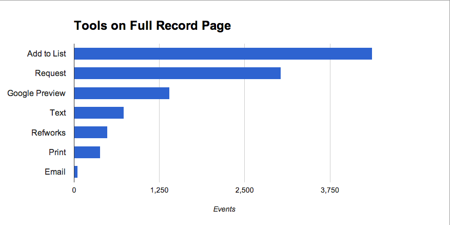
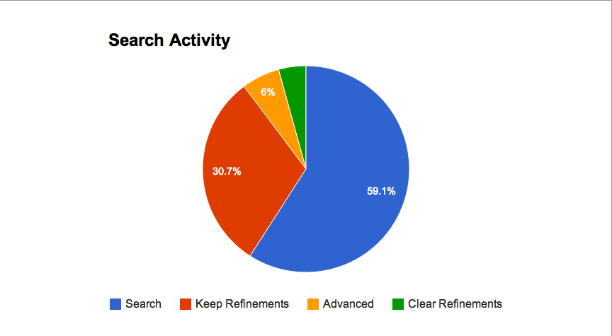

Google Analytics, Event Tracking and Discovery Tools
Going Beyond Pageviews
Emily Lynema, Associate Head, IT NCSU Libraries
Adam Constabaris, Singe de Code, NCSU Libraries
Overview
Google Analytics can be used to track not only pageviews, but in-page events, allowing you to understand more about how your site is being used.
Some Details
- Track any user action you can identify with JavaScript
- You decide what to track!
- Which user events?
- How should they be categorized?
- Use simple JavaScript to push events to Google
- Enjoy Google Analytic's feature-full reporting interface
Why Care?
Have real patron data to use to improve usability of your site.
Make data-driven design decisions.
Event Tracking Use Cases
- Hidden or externally loaded (AJAX) content
- Hidden or externally loaded (AJAX) content
- Internal links that occur in multiple places
- Hidden or externally loaded (AJAX) content
- Internal links that occur in multiple places
- External links

- Hidden or externally loaded (AJAX) content
- Internal links that occur in multiple places
- External links
- Actions that are difficult to extract from pageview URLs
http://catalog.lib.ncsu.edu/search?Ntk=Keyword&N=206432&view=full&Ntt=javameans User clicked "Available online" checkbox
NCSU Catalog Activity(*)
Tracking LOTS of things
(*) But not all of them for very long
This is the time for planning. How to categorize events to achieve the desired reports?
What are we tracking?
- Results List clicks
- Facet expand / close
- Facet checkboxes
- Send search out to TRLN / WorldCat / Summon
- Full record tools
- Full record tabs
- Location tab clicks (request, browse, full text)
- External URLs on the full record (finding aids, full text)
- Browse (shelf browse / subject browse)
Category: Results
Clicks in the body of the resultsFullText | Add List | Volumes
Category: Facet
Clicks on facets. Note: We were primarily interested in user behavior of opening and/or closing facets.Show More | Expand
Category: FacetCheckbox
Clicks on special checkbox optionsOnline | Available | New
Category: Expand Search
Send search to other discovery toolsTRLN | WorldCat | Summon
Category: Tools
Toolstrip actions on the full recordRequest | Text | Email | Print | Refworks | Google Preview | Add List
Category: Tabs
Tab clicks on the full recordLocation | Details | Contents | MARC | Preview | History
Category: Location tab
Clicks within the Location tabBrowse Shelf | Request | Full Text | Volumes
Category: URL
Assorted external URLs on the full recordFullText | FindingAid | DigitizedContent
Category: Browse
Options to browse related materialsBrowse Shelf | Subjects
Interesting Findings
various datesWhoa....look at those tabs.
Note: February 5-7, 2013Wait...do I see MARC??
Note: February 5-7, 2013An apology
- Longer term usage trends show the Contents (supplemental table of contents) tab usage being extremely high (*)
- Google Preview over the long haul is popular enough to make this top 10 list
(*) sorry, that was a bug in the last code release
A small link can overpower a fancy widget
Note: November - February, 2013Having a link in more than one place can be helpful
Note: January - February, 2013Users make some decisions from the results list
Note: February 5-7, 2013But they still like to look at the full record
Note: February 5-7, 2013Users want to get stuff delivered (*)
 Note: November - February, 2013 (*) E-mail is a red herring; low reporting is due to a prior code bug. More recent numbers show it on par with texting.NCSU Summon Activity(*)
Tracking fewer things
* Some things are almost impossible to track (ex: clicks to view full text)
Picked the things that were most reasonable to track, rather than most desired
What are we tracking?
- Searches
- Sorting
- Paging
- Facet activity
Most difficult to identify: user clicks to view full text. So we didn't go there.
Category: Search
Different types of search activitySearch Button | New Search | Keep Search Refinements | Advanced Search
Category: Sorting
Sort optionsRelevance | Date (newest) | Date (oldest)
Category: Facet
Clicks on actual facet valuesIndividual facet name + value
Category: Paging
User paging through resultsIndividual page number
Interesting Findings
November 2012 - February 2013Paging is more popular than facets
Content Type and Subject are basically the only facets

Advanced search does get used....some
Someone is using "Keep Search Refinements"...a lot
The Plumbing
Of course it involves jQuery!
It doesn't have to, but that's how we did it.
GA Event Tracking API
// safely initialize _gaq; if GA loads after your code,
// any events already in the queue will be sent to the Goog.
var _gaq = _gaq || [];
...
_gaq.push(['_trackEvent', eventCategory, eventAction, optional_eventLabel, optional_eventValue ]);
That's really all there is to it; the "push" method takes an array, the first member of which is a command and the rest of which constitute the arguments to that command.
Event Overview
To track an event of a given type, you need a category and an action. Optionally, you can add a label and, if you add the label, you may also add a value. Picking values for these things (and whether you use 2, 3, or 4 of them for any given event) is up to you.
Implementation Issues
- Q1. How do we get the right data into the GA
_trackEvent? - Q2. How do we send events when "the right things" happen in the UI?
- A1. HTML5 Data Attributes
- A2. jQuery (or similar)
HTML5 Data Attributes
Actionable metadata!
User agents must not derive any implementation behavior from these attributes or values. Specifications intended for user agents must not define these attributes to have any meaningful values.
Huh?
data-* attributes give you a place to put data for use by your scripts. Browsers shouldn't try to do anything with them, and you shouldn't
use them to add visual styles.
Attributes Just for Your Scripts
HTML
<a href="#marc" data-ga-event="Record,Tab,MARC">Marc Record</a>
jQuery API
$("a[data-ga-event]").on("click", function(evt) {
// data-ga-event => "gaEvent"
var data = $(this).data("gaEvent").split(",");
data.unshift("_trackEvent");
// data == ['_trackEvent','Record','Tab','Marc']
_gaq.push(data);
});
Putting it Together
- Make an event taxonomy
- Edit markup
- Add handlers for the events you want to track
- Sit back and wait for the
moneydata to roll in
Add Handlers
var _gaq = _gaq || [];
function logGAEvent(data) {
data.unshift("_trackEvent");
_gaq.push(data);
}
$(document).ready(
function() {
$("*[data-ga-event]").click(
function(evt) {
var data = $(this).data("gaEvent").split(",");
logGAEvent(data);
}
);
}
);
Really, That's It?
Yes.
Ok, no, but that's the basic technique.
On The Coding Style
Don't Actually Do That
These are stick figure drawings of actual production code.
Please also don't use text-decoration: blink
And really don't go out and add CSS3 animation styles to simulate blinking text on Chrome for the sake of a gag.
When it's Not Your Markup
You might want to track things going on in an externally hosted service, such as we did with Summon, which generates its own HTML. Adding our own HTML5 data attributes here is not possible.
Not Your Markup (cont.)
- Find a way to inject your javascript (and, if needed, GA) onto the page.
- Add tracking data to elements programmatically.
Inject JavaScript
Matthew Reidsma's Summon Stats showed us how to load external JavaScript onto our Summon pages.
For other services, if there's no direct support for it, the product's site customization features might allow adding <script> tags.
Add Tracking Data
- You'll have to use more selectors.
- You may have to use specific location in the DOM instead of
idandclassattributes.
Example
// from our custom summon-analytics.js
$("#pageNavigation a[href^='/search']").click(
function(evt) {
var link = $(evt.target);
var lt = $.trim(link.text());
if ( lt == "Next" ) {
lt = "" + (thisPage +1);
} else if ( lt == "Prev" ) {
lt = "" + (thisPage -1);
}
logEvent("Paging", "Page", lt);
}
);
This puts the event data into the event handler, but you could also write data to the element on page load and do something more like we did in our catalog.
Explorations
- Testing and Debugging
- AJAX Content
- Selector Strategies
- Tracking Tweaks
Troublerebuking, Debugging, and Testing
- Be proactive! Set up a safety net first
- Emphasis: don't be like me; plan for testability up front.
- Make friends with your browser's dev tools/debugger.
“Fire it up and see if it works?”
We found that it can take up to a day for an event to show up in the GA dashboard, so this is an error-prone and time consuming testing strategy.
Working With a Net
- Write a separate function that actually does the event logging, rather than doing it inline.
- Ditto for the click handler function.
- Test everything you can see and control *before* you try sending events to the third party
Above All
Be the kind of person that writes automated tests.
- Write your JavaScript so it's testable
- use named functions
- Single Responsibility Principle -- don't do too much in your functions.
- Learn and use a JavaScript testing framework (qUnit, Jasmine, Mocha, etc.)
Other Safety Tips
- Know that
_gaq.push()returns a boolean indicating success or failure (just like Array.push()). - Load
ga_debug.jsinstead ofga.jsduring development; this outputs information about what GA is actually doing behind the scenes in your browser's console. - If you're a Chrome user install the Google Analytics Debugging extension; this lets you dynamically enable
ga_debug.jsin your browser, which is very handy if you're working on a live site.
Tracking Events in AJAX Content
- You may not control the markup
- The tracked elements are not in the DOM when the page is loaded, so you have to do a bit more work in your selectors
AJAX Content Tracking (cont.)
jQuery lets you specify handlers for events for elements that don't exist yet, by (essentially) listening on an (existing) element that (will) contain them. This is not the only approach, but is the easiest to work with.
// our catalog loads transformed EAD XML via XHR when users click on the content tab
$("#contents").on("click", ".EAD_daolink", function(evt) {
logGAEvent($(this), ['URL','Digitized Content','CCC']);
});
On Selector Strategy (Your Markup)
*[data-ga-event]matches all elements with tracking data, but is potentially very slow; this data can be valuable, but you don't want to frustrate your users.- If you use a CSS class in concert with it (e.g.
.tracked[data-ga-event], it's both faster and you can temporarily disable tracking for some elements should you need to, by simply removing the class.
Tracking Tweaks
We've shown some very simple examples, but you might want to do something fancier (do people do Y after trying X?) which requires maintaining state.
jQuery's Data API can be used to write data onto elements.
This can probably get a bit crazy though.
Links
About This Presentation
We forked reveal.js on github and did our edits there.